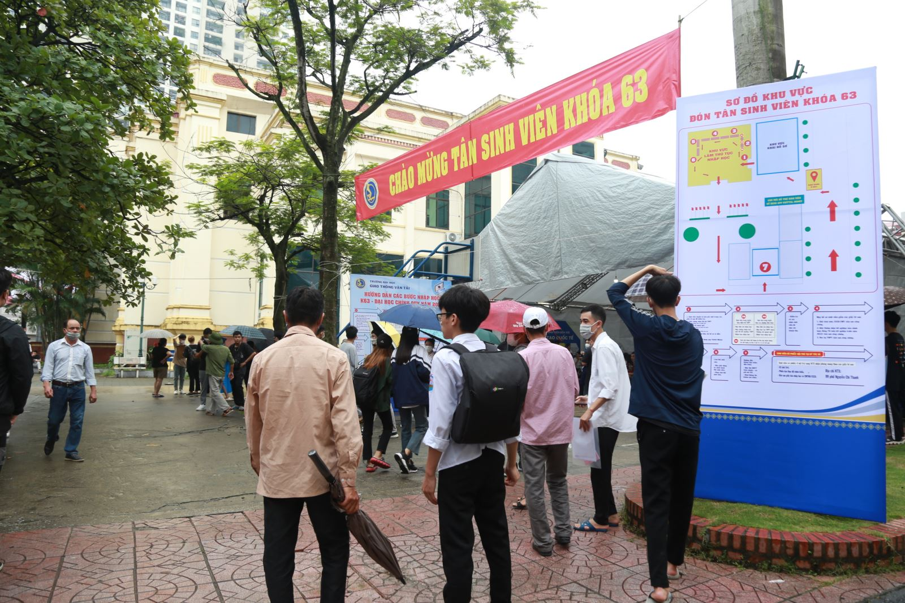
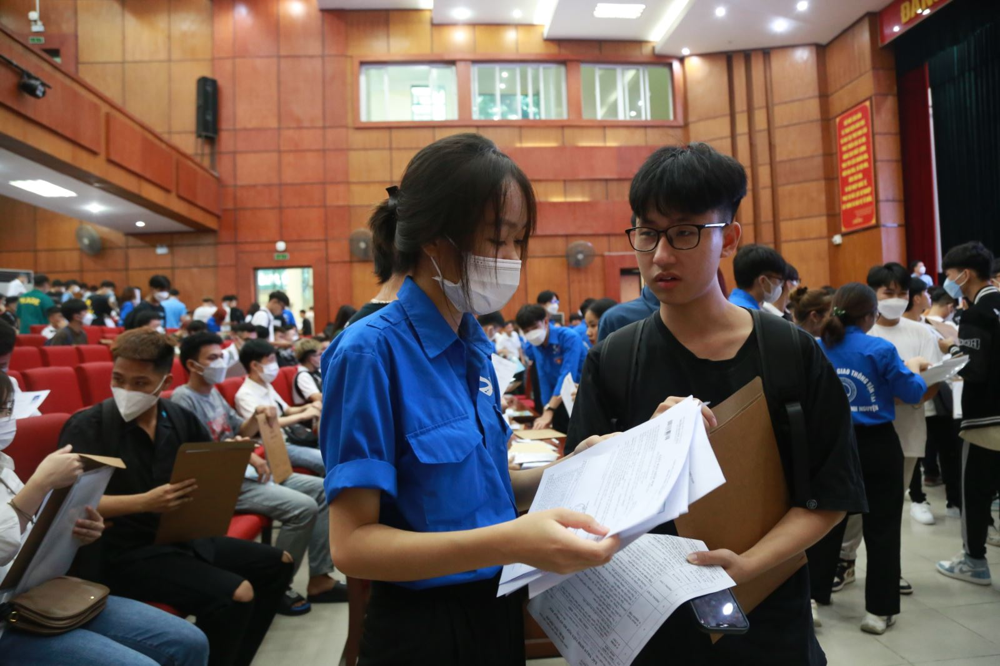
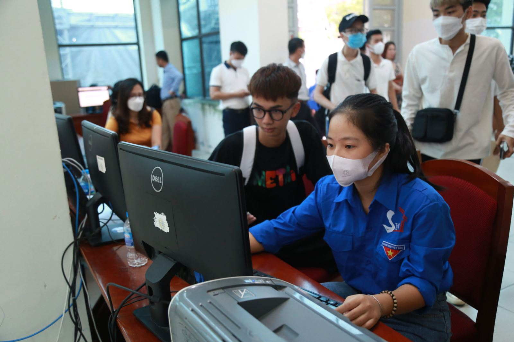
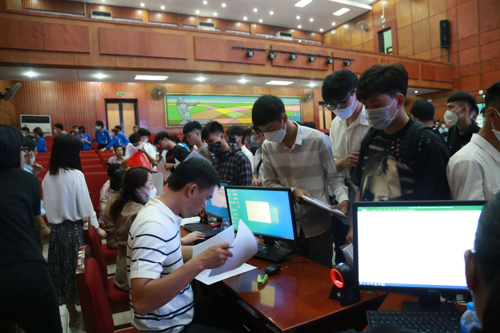
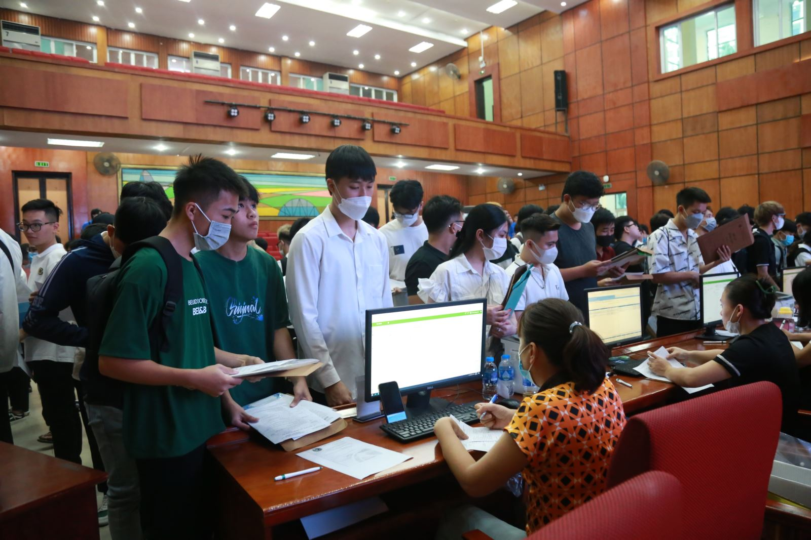
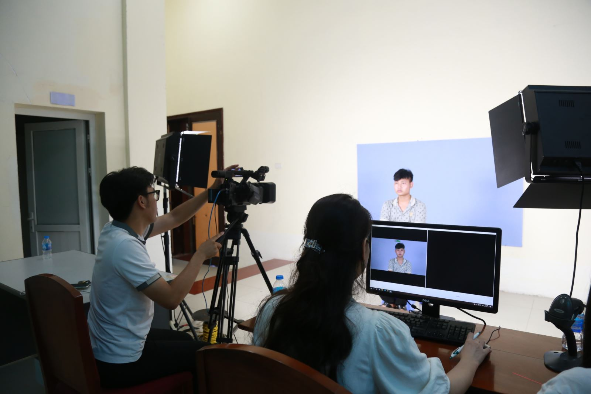

Trường Đại học Giao thông vận tải đón Tân sinh viên Khóa 63
Ngày 28/9/2022, Trường Đại học Giao thông vận tải tổ chức đón Tân sinh viên khóa 63 Đại học chính quy về nhập trường.
Ngay từ đầu giờ sáng, đông đảo tân sinh viên K63 và phụ huynh đã có mặt tại khu vực đón tiếp để làm thủ tục nhập học.
Các bộ phận chức năng trong Nhà trường đã phối hợp, lên kế hoạch chi tiết để quy trình đón sinh viên diễn ra thuận lợi, trôi chảy.
Theo kế hoạch của Nhà trường, thời gian đón sinh viên sẽ diễn ra từ ngày 28/9 đến 01/10/2022.
Ngay sau khi hoàn thành việc nhập Trường, tân sinh viên khóa 63 sẽ bước vào Tuần sinh hoạt công dân, sinh viên đầu khóa.
Một số hình ảnh ngày đầu tiên đón tân sinh viên K63
Khu vực đón Tân sinh viên K63
 Lực lượng sinh viên tình nguyện tích cực hỗ trợ các Tân sinh viên
 Các bộ phận chức năng làm thủ tục nhập học cho tân sinh viên K63
Bộ phận làm thẻ sinh viên
Đăng bởi: vnlinh